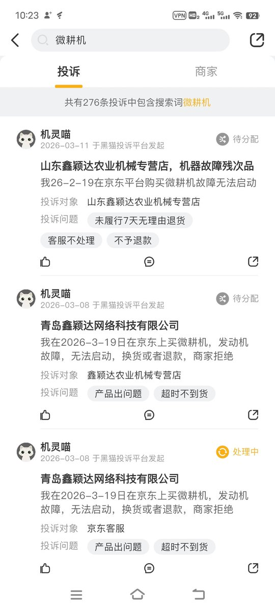

蓝狗🏳️⚧️🍥二代目（互关喵
@DXMDusk
@xifancry 农用具最好去实体店买，坏了可以找店里售后维修，特别是大件，有问题退货麻烦，维修起来也基本是自己处理

夕凡的撸毛之路
@xifancry
兄弟们我开工了，今天看看能不能把这片地干完，我看了一下这地土壤不硬，用手扶微耕机应该很好犁。我昨天拼多多下单的两驱柴油微耕机退掉了，因为我看两驱的很费劲不如四驱的安全，但是看了一下拼多多的好多店铺都有人在维权，我看到了抖音有人发拼多多某个店铺买的不能用然后退款被商家无故克扣损失了 https://t.co/9mv7i7wLoQ